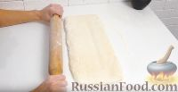
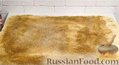
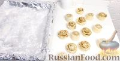

Добро пожаловать на сайт шеф-повара!
Главная
Рецепты
Блог
О нас
Контакты
Слоённые булочки
Ингредиенты:
200 мл воды теплой
200 мл молока теплого
2 яичных белка (желтки оставить для смазывания)
0,5 чайной ложки соли
1 пакетик свежих дрожжей или 2 пакетика сухих(14 г примерно)
2 ст ложки сахара
200 мл растительного масла
750-800 г муки (может понадобиться чуть больше)
125 г сливочного масла мягкого для смазывания теста
Приготовление:
Раскатываем дрожжевое слоеное тесто в прямоугольный пласт толщиной 0,5 см.

Смазываем тесто мягким сливочным маслом по всей поверхности, не доходя сантиметра 3 до края.
Посыпаем сахаром и корицей, а также щепоткой соли, также не доходя сантиметра 3 до края.

Сворачиваем тесто в рулет. Фиксируем край.
Разрезаем рулет на 16 частей.
Можно развернуть слои, чтобы получились розочки
Выкладываем булочки с корицей на противень, выстеленный бумагой для выпечки или фольгой, присыпанной мукой.

Оставляем булочки из дрожжевого слоеного теста на расстойку примерно на 1 час под пленкой или полотенцем.
Булочки-улитки из слоеного теста, с сахаром и корицей, выпекаем в разогретой духовке при температуре 170-180 градусов до румяности (15-20 минут).